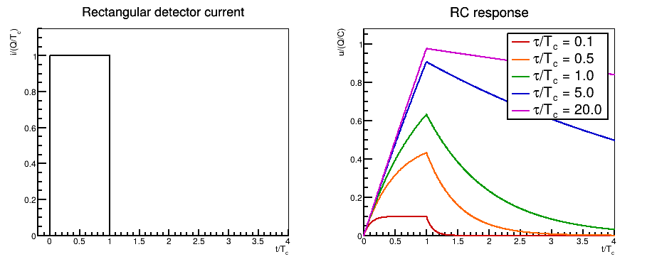
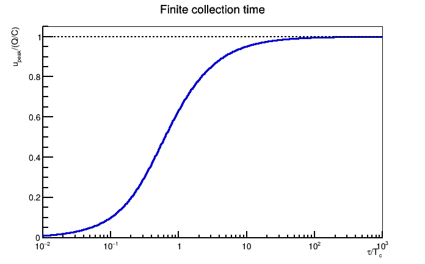
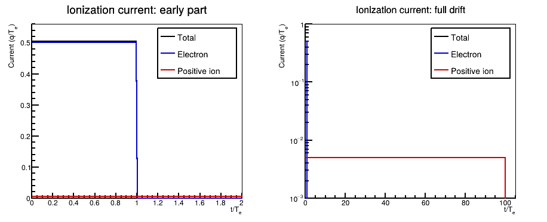
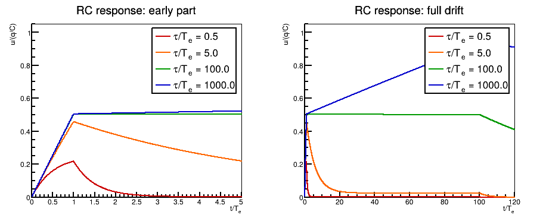

探测器电流与 RC 电路的输出脉冲
探测器首先产生电流 $i_{\rm det}(t)$，前置放大器再把电流转换为电压。电荷收集时间与电路时间常数的相对大小，决定输出是接近电流形状，还是接近对电流的积分。本例从可解析的矩形电流开始，再把同一方法用于电离室电流。
1. 电流输入与 RC 响应
对反馈电容 $C_f$ 与反馈电阻 $R_f$ 并联的电荷灵敏前放，取探测器电流为正，并把负极性的实际输出写成正的幅度 $u=-V$，电路方程为
在脉冲前输出为零时，解为
因此，电流输入对应的 impulse response 是 $h_I(t)=e^{-t/\tau}\Theta(t)/C_f$。若输入是一笔瞬时电荷 $Q\delta(t)$，输出立即达到 $Q/C_f$，随后按 $e^{-t/\tau}$ 衰减。
2. 矩形电流与有限电荷收集时间
设总电荷为 $Q$，在收集时间 $T_c$ 内产生恒定电流 $i_{ m det}=Q/T_c$。令 $x=t/T_c$、$r=\tau/T_c$，输出可写成
所有曲线都使用同一个 $Q/C_f$ 归一化。这样既能比较形状，也不会把由有限 $\tau$ 造成的峰高差异消掉。
import ROOT, numpy as np
ratios = [0.1, 0.5, 1.0, 5.0, 20.0] # tau / Tc
colors = [ROOT.kRed+1, ROOT.kOrange+7, ROOT.kGreen+2,
ROOT.kBlue+1, ROOT.kMagenta+1]
def response(x, r):
if x < 1:
return r * (-np.expm1(-x/r))
return r * (-np.expm1(-1/r)) * np.exp(-(x-1)/r)
x = np.linspace(0, 4, 801)
graphs = []
for r, color in zip(ratios, colors):
y = np.array([response(value, r) for value in x])
graph = ROOT.TGraph(len(x), x, y)
graph.SetLineColor(color)
graphs.append(graph)double response(double x, double r) {
if (x < 1)
return r * (-std::expm1(-x/r));
return r * (-std::expm1(-1/r)) * std::exp(-(x-1)/r);
}
double ratios[] = {0.1, 0.5, 1.0, 5.0, 20.0}; // tau / Tc
int colors[] = {kRed+1, kOrange+7, kGreen+2, kBlue+1, kMagenta+1};
std::vector<TGraph*> graphs;
for (int j=0; j<5; ++j) {
auto graph = new TGraph();
graph->SetLineColor(colors[j]);
for (int k=0; k<=800; ++k) {
double x = 4.0*k/800;
graph->SetPoint(k, x, response(x, ratios[j]));
}
graphs.push_back(graph);
}
3. Ballistic deficit
矩形电流在 $t=T_c$ 时达到最大输出，峰高为
这一定量描述了有限电荷收集时间造成的 ballistic deficit。例如 $\tau=T_c$ 时，峰高只有 $(1-e^{-1})Q/C_f\approx0.632Q/C_f$；只有在 $\tau\gg T_c$ 时，峰高才近似只由总电荷决定。
r = np.logspace(-2, 3, 501)
peak = r * (-np.expm1(-1/r))
gpeak = ROOT.TGraph(len(r), r, peak)
gpeak.SetTitle("Finite collection time;#tau/T_{c};u_{peak}/(Q/C)")
gpeak.Draw("AL")
ROOT.gPad.SetLogx()auto gpeak = new TGraph();
for (int k=0; k<=500; ++k) {
double r = std::pow(10., -2.0 + 5.0*k/500);
double peak = r * (-std::expm1(-1/r));
gpeak->SetPoint(k, r, peak);
}
gpeak->SetTitle("Finite collection time;#tau/T_{c};u_{peak}/(Q/C)");
gpeak->Draw("AL");
gPad->SetLogx();
4. 任意电流波形的数值计算
实际探测器电流通常不是矩形。若采样间隔为 $\Delta t$，并把每个时间 bin 内的电流近似为常数，可使用精确递推式
这比每个采样点重新计算整个卷积更直接。它描述的是模拟 RC 电路的离散计算；后续的 pole-zero correction 或数字成型属于另一层处理。
5. 平行板电离室的电子与离子分量
在理想平行板结构中，weighting field 为常数。设一对电荷在距阳极 $x_0$ 处产生，电子和正离子的漂移速度分别为 $v_e$、$v_+$，在阳极上的感应电流幅度为
两部分的积分分别为 $q x_0/D$ 和 $q(D-x_0)/D$，总感应电荷为 $q$。下面的示意例取 $x_0=D/2$、$T_+=100T_e$；因此电子和离子各贡献 $q/2$，但电流幅度和持续时间相差 100 倍。这些时间比用于说明原理，不代表某一台具体探测器的测量参数。
dt, Te, Ti = 0.01, 1.0, 100.0
t = (np.arange(12000) + 0.5)*dt
ie = np.where(t < Te, 0.5/Te, 0.0)
ii = np.where(t < Ti, 0.5/Ti, 0.0)
current = ie + ii
print("Integrated induced charge =", current.sum()*dt) # 1 qdouble dt=0.01, Te=1.0, Ti=100.0, charge=0;
std::vector<double> current(12000);
for (int k=0; k<12000; ++k) {
double t=(k+0.5)*dt;
double ie=(t<Te ? 0.5/Te : 0);
double ii=(t<Ti ? 0.5/Ti : 0);
current[k]=ie+ii;
charge+=current[k]*dt;
}
std::cout << "Integrated induced charge = " << charge << " q\n";
将同一电流输入不同时间常数的 RC 电路：
responses = []
for tau in [0.5, 5.0, 100.0, 1000.0]:
a = np.exp(-dt/tau)
state = 0.0
output = np.zeros(len(current))
for k, value in enumerate(current):
state = a*state + tau*(1-a)*value # Cf = 1
output[k] = state
responses.append(output)double taus[] = {0.5, 5.0, 100.0, 1000.0};
std::vector<std::vector<double>> output(4, std::vector<double>(12000));
for (int j=0; j<4; ++j) {
double a=std::exp(-dt/taus[j]), state=0;
for (int k=0; k<12000; ++k) {
state=a*state+taus[j]*(1-a)*current[k]; // Cf = 1
output[j][k]=state;
}
}
6. 正比室中的慢离子信号
正比室不能直接套用平行板中的恒定电流。对理想圆柱结构，阳极半径为 $a$、阴极半径为 $b$，正离子迁移率为 $\mu_+$，阳极电压为 $V_0$。电子雪崩发生在阳极附近，电子很快被收集；正离子向外漂移时，在阳极上产生的电流近似为
直到离子到达阴极，$T_+=(b^2-a^2)\ln(b/a)/(2\mu_+V_0)$。由于圆柱 weighting field 在细阳极附近很强，离子刚离开雪崩区时贡献最大，随后近似按 $1/(t+t_0)$ 下降。把这一 $i_+(t)$ 代入前面的卷积或递推式即可得到 RC 输出；真实脉冲还会受到气体增殖涨落、空间电荷和电子学带宽影响。
7. 结果的使用范围
- $\tau=R_fC_f$ 是电路衰减时间常数，不是探测器的电荷收集时间。
- 若用峰高估计能量，需要 $\tau$ 明显长于相关事件的最大收集时间，或使用经过验证的 pole-zero correction 和成型方法。
- 逐条把曲线按各自峰值归一化适合比较形状，但会隐藏 ballistic deficit，不能再用来比较能量响应。
- 增大 $\tau$ 还会影响噪声、pile-up 和计数率能力；这里仅讨论信号形成，不给出噪声最优成型时间。
计算校验：矩形电流在 $\tau=T_c$ 时得到 $u_{\rm peak}/(Q/C_f)=0.632121$；电离室示例中电子和离子电流的离散积分之和为 $1.000000q$。